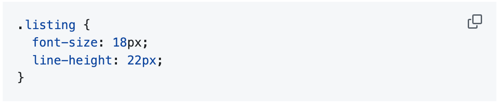
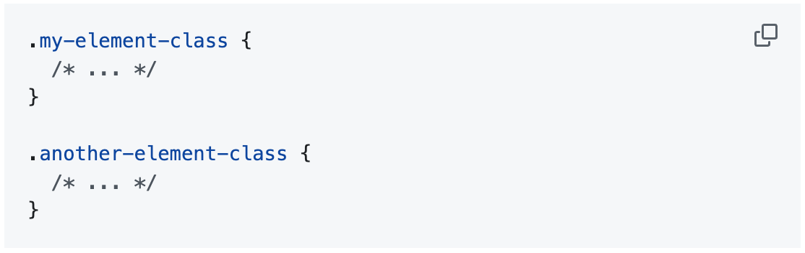

Terminology
Rule declaration
A “rule declaration” is the name given to a selector (or a group of selectors) with an accompanying group of properties. Here's an example:
Selectors
In a rule declaration, “selectors” are the bits that determine which elements in the DOM tree will be styled by the defined properties. Selectors can match HTML elements, as well as an element's class, ID, or any of its attributes. Here are some examples of selectors:
